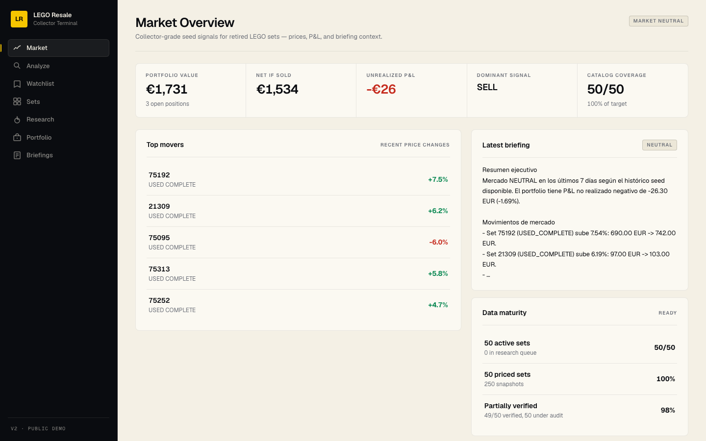

Incremental, not a rewrite
The stable Streamlit V1 stays alive while the FastAPI/Next.js V2 grows around it.
From a working Streamlit analyzer to a product-style collector intelligence terminal with FastAPI, Next.js, portfolio P&L, research governance and deploy-ready architecture.
V1 proved the core workflow: capture a listing, extract the set, price the opportunity and save the result. V2 turns that workflow into an operating system for collectors: market movement, watchlist, set intelligence, portfolio exposure and data quality.
The stable Streamlit V1 stays alive while the FastAPI/Next.js V2 grows around it.
A premium Linear/Stripe-inspired interface replaces a single-purpose analyzer with a collector terminal.
The app separates demo seed data from externally verified market data before making public claims.
The app now has seven V2 routes: Market, Analyze, Watchlist, Sets, Research, Portfolio and Briefings. Each route exists to demonstrate a real product workflow rather than a decorative page.


The architecture is intentionally explainable: a proven V1 pipeline, a FastAPI backend, a typed Next.js frontend and a SQLAlchemy/Alembic foundation ready for Postgres.
V1 core capture -> extract -> identify -> price -> score -> archive V2 backend /api/analyze /api/market /api/watchlist /api/portfolio /api/briefings V2 frontend Market · Analyze · Watchlist · Sets · Research · Portfolio · Briefings
Railway handles the FastAPI backend. Vercel handles the Next.js frontend. Postgres can be attached through V2_DATABASE_URL.
The strongest product decision was not pretending seed data was real market verification. V2 now has a visible audit layer for active catalog evidence.
The local product is working, tested and prepared for cloud publication. The remaining step is manual: connect Railway/Vercel accounts and decide whether to publish with seed/demo positioning.
116 backend/core tests pass. Frontend production build passes. V2 doctor passes. Local deploy smoke test passes.
Dockerfile, Railway config, Vercel config, CORS settings, boot script and smoke test are prepared.
The project shows product judgment: build, evolve, test, document, and avoid unsafe claims.